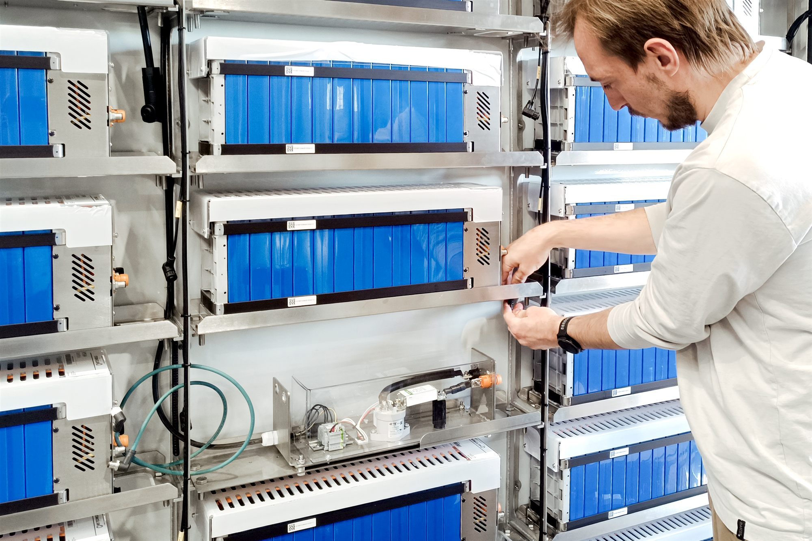

Together, this collaboration highlights how cutting-edge engineering, electrification, and close partnerships can redefine what is possible – not only within the wind industry, but across industries as a whole.
A crane that climbs, and changes the rules
At the heart of Liftra's innovation is the Self-Hoisting Crane, a solution that severely challenges conventional thinking about heavy lifting. Instead of relying on massive ground-based cranes, Liftra has developed a system that climbs the wind turbine itself.
"We were the first in the world to develop a crane that climbs up the wind turbine and replaces components. Back then, many people didn't believe it would work – but today we have nearly 100 cranes operating worldwide."Jakob Brix Hansen, Product Group Manager of Self Hoisting Cranes, Liftra
The crane is transported in a standard container, after which its interface is assembled inside the turbine. It is then hoisted to the nacelle using smaller lifting tools, where it becomes capable of handling some of the most demanding operations in the industry.
"We can lift up to 78 ton, including full rotors with blades, and replace major components like gearboxes and main bearings."Jakob Brix Hansen, Liftra
This capability is not only technically impressive, but it also fundamentally changes how maintenance and installation tasks can be performed.

Solving real-world challenges in wind energy
Wind turbines are growing taller and more powerful, and with that comes new logistical challenges. Traditional cranes require extensive transport, setup, and ground space. In some cases, up to 30–40 trucks are needed just to mobilize a single crane. Liftra's solution offers a radically different approach.
"Our system becomes especially competitive on taller towers. Where traditional cranes become extremely large and expensive, our crane can lift the same weight regardless of height. It just needs more wire."Jakob Brix Hansen, Liftra
In practice, this means wind turbine operators can carry out complex operations more efficiently, and with fewer environmental and logistical constraints, through lower costs and faster deployment, minimal ground impact and reduced site preparation, and greater flexibility in remote or difficult locations.
Electrification as a competitive advantage
While the mechanical innovation is, to say the least, remarkable, one of the most important aspects of Liftra's solution is its transition to battery-powered operation. Traditionally, large cranes rely on diesel generators. Liftra initially followed the same path but quickly encountered limitations.
"We were very restricted by weight. The generator became a problem, so we started looking at batteries, and it turned out to be a win-win."Jakob Brix Hansen, Liftra
Today, all Liftra's products are fully electrified, including solutions like the innovative Installation Crane, which can install turbines with hub heights of up to 250 meters and lift components weighing up to 120 tons, while significantly reducing both mobilization and on-site impact.
"Since electrifying our production, we haven't looked back. Batteries give us higher energy density, lower weight, and a more sustainable solution."Jakob Brix Hansen, Liftra
Liftra is a great example of the fact that electrification isn't just a sustainability initiative. It's also a performance advantage. In fact, the battery-powered system enables design possibilities that would not be feasible with traditional fuel-based systems.
Engineering complexity requires the right partners
Developing a system like the Self-Hoisting Crane is far from simple. One of the biggest challenges is balancing strength and weight.
"We are limited by what a container can weigh. So we constantly optimize, removing unnecessary weight while maintaining strength. It's a very complex engineering process."Jakob Brix Hansen, Liftra
This is where partnerships become critical. LEAP Solutions entered the project as a technical advisor, helping Liftra navigate the complexity of battery systems and energy integration.
"Liftra wanted to move away from assembling batteries themselves. Our role was to help define the right solution – from initial evaluations of system designs, to selecting the right suppliers."Simon Bork Kristensen, Project Engineer, LEAP Solutions
The process involved evaluating multiple vendors across Europe before selecting WS Technicals.
"We looked at several options, but WST offered the most complete solution. That was a key factor."Simon Bork Kristensen, LEAP Solutions
From complexity to plug-and-play
Before the collaboration, Liftra's battery setup involved multiple suppliers across different countries, creating logistical challenges and inefficiencies. With WST, the solution became significantly simpler.
"Previously, we sourced components from different places and assembled them ourselves. Now we receive a complete plug-and-play solution. It's both easier and more efficient for us."Jakob Brix Hansen, Liftra
The batteries supplied by WS Technicals are high-voltage systems with integrated monitoring and heating, designed specifically for demanding industrial applications like wind turbine installation. As part of this complete solution, the systems include an integrated Battery Management System (BMS) delivered by Danish Lithium Balance, of which WS Technicals is a co-owner, ensuring reliable performance and seamless system integration.
The value of flexibility and strong relationships
Beyond the technology itself, the collaboration highlights the strength of partnerships rooted in committed people and a flexible approach, enabling solutions that function cohesively from concept to execution. Throughout the project, both Liftra and LEAP Solutions emphasize how crucial responsiveness and collaboration have been.
"We suddenly couldn't source key components in time, and it put our production at risk. WST stepped in and helped us, even redirecting components from their own internal production. That level of flexibility makes a huge difference. They don't feel like just a supplier – they feel like a partner."Jakob Brix Hansen, Liftra
This mindset, where collaboration goes beyond transactions, is essential in complex engineering projects where challenges are inevitable.
Driving a more sustainable wind industry
Sustainability is deeply embedded in Liftra's work, not as a standalone goal, but as an integral part of the wind energy ecosystem.
"It doesn't make sense to install sustainable wind turbines using non-sustainable equipment. We want to support the entire value chain in becoming more climate-friendly."Jakob Brix Hansen, Liftra
With more than 3,000+ development projects completed and over 1,000 major component replacements carried out, Liftra has already made a significant impact on the industry, and the company continues to grow.
A glimpse into the future of heavy lifting
The collaboration between Liftra, LEAP Solutions, and WS Technicals demonstrates how electrification, engineering excellence, and strong partnerships can unlock entirely new possibilities. From cranes that climb wind turbines to battery systems that outperform traditional generators, the case shows that electric solutions are not just viable – more and more often they are actually superior. And as the industry continues to evolve, one thing is clear: the future of heavy lifting is not only powerful – it is electric.
About Liftra: Liftra is a global corporation recognized by the international wind turbine industry as a specialist within lifting and transportation solutions. Liftra designs, engineers, manufactures, and delivers tailor-made solutions to enable more sustainable, time-efficient, and cost-effective wind turbine installation and maintenance for onshore and offshore locations. Since 2003, Liftra has brought high quality equipment and services to the wind energy sector, striving to push boundaries and set new standards that can lower the cost of green energy.
About LEAP Solutions: LEAP Solutions is a Danish engineering consultancy specializing in complex energy solutions. With expertise spanning energy engineering, automation, control systems, and industrial software, LEAP supports clients across the entire project lifecycle, from concept and design to implementation and commissioning, working closely with partners to develop efficient, reliable, and future-ready solutions within emerging energy technologies such as battery systems, PtX, and green energy infrastructure.